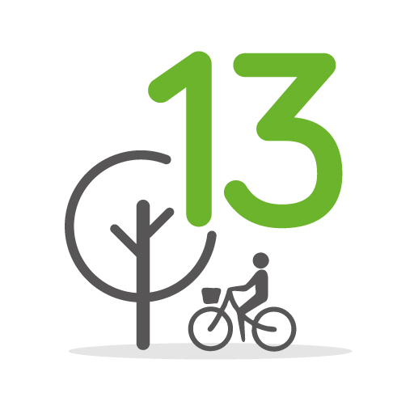

Kim jesteśmy
10 kroków
Przyłącz się!
Kim jesteśmy
1. przestrzeń spacerowa wytyczona na terenie istniejącego trawnika z płyt kamiennych ułożonych w odstępach w równoległe pasy z oświetleniem punktowym (lampy chodnikowe) 2. wymiana zniszczonej nawierzchni asfaltowej na asfalt kolorowy lub płyty chodnikowe betonowe 3. wymiana nawierzchni asfaltowej na teren biologicznie czynny (trawa) 4. wytyczenie pola do gry w bule o nawierzchni żwirowej lub z tłucznia wydzielonej krawężnikiem (wymiary bulodromu 4x15m) 5. całkowite usunięcie starego ogrodzenia Stadionu Cracovii lub wymiana na nowe niskie ogrodzenie 6. podesty drewniane wokół pni istniejących drzew 7. siedziska drewniane 8. ławki drewniane 9. oświetlenie alei spacerowej – latarnie 10. kosze na śmieci 11. kosze na psie odchody 12. pielęgnacja trawnika i nasadzenia zieleni niskiej – krzewy kwitnące, kwiaty itp
Donice z zielenią wysoką
Ławki i kosze na śmieci
Oznakowane przejścia dla pieszych
Nowa nawierzchnia chodnika

Kolejne szerokie elementy graficzne: mapka rowerowa, mapka hałasu, mapka zanieczyszczenia, mapka z decyzjami o wycinkach